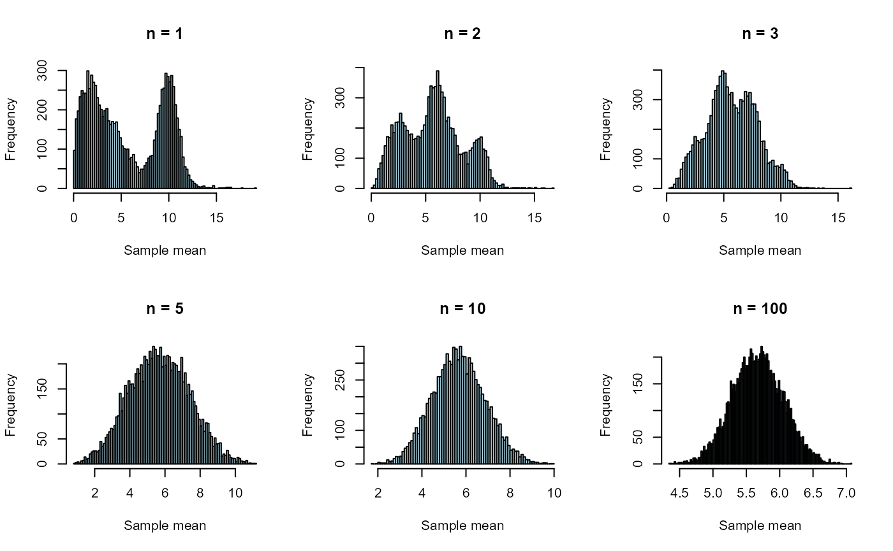
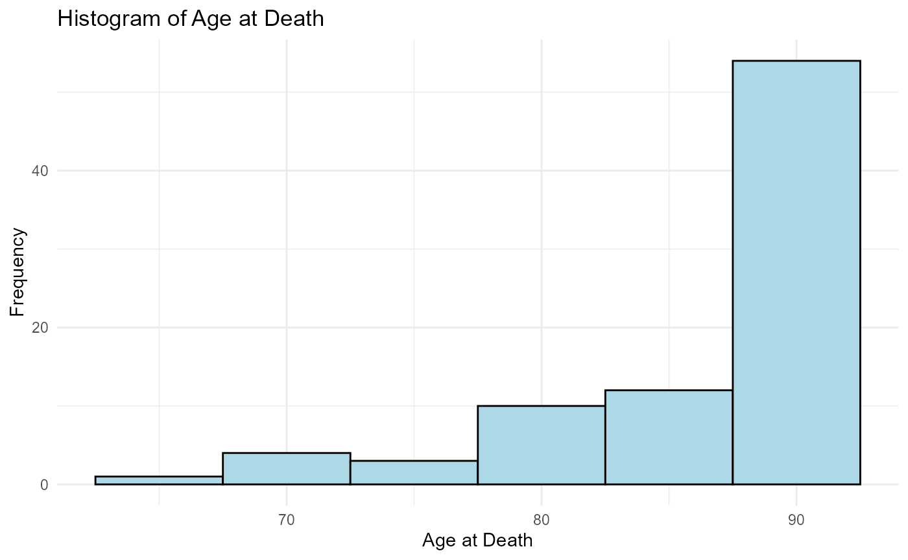

BIOST 561: Homework 1
Due date: 11:59am (noon) on Sunday, April 12th, 2026
HW1.RmdInstructions
These instructions are essential, so please read them all carefully.
Submit your homework as both the RMarkdown (
.Rmd) file and HTML file on your GitHub page. (More on this later, as the first homework will guide you on how to do this.)Please answer the question prompt and show your code (inline). That is, all your code should be visible in the knitted chunks.
To complete this homework, you may write in the
HW1.Rmdfile. (It is recommended to complete this homework in R Studio, where clicking theKnitbutton would knit your homework.)
Disclosures
- Please disclose below who you collaborated with and if you’ve used ChatGPT (or any comparable AI tool) to what extent when completing this homework. See the syllabus for the course expectations.
Q0: Survey
Intent: This question is simply for course logistics and for the course instructor to get to know you.
Question 0A: Please let me know your preferred name and preferred pronouns. -Preferred name: Simiyu M Kevin -Preferred pronouns: He/Him/His
Question 0B: Please read the syllabus in its entirety and write, “I have read and understood the entire syllabus,”
I have read and understood the entire sylllabus
- Question 0C: If any, please briefly describe the courses you have taken at UW that
In the course BIOST514/517, BIOST515/518 the weekly assignements involved doing analyses using R which was great to refresh our knowledge and learn new things as far as handling data in R involves.
- Question 0D: What do you hope to learn from this course?
I hope to learn how to use R to do more complex analyses and to be able to write my own functions and packages in R. I also hope to learn how to use GitHub for version control and collaboration.
Q1: Setting up an R package and GitHub
Intent: This section is not a question but to guide you step-by-step on how to make an R package and a GitHub, which will be critical for this course. This question will be challenging for students who are not familiar with R Studio or GitHub, so please ask the instructor questions.
Note: If you do not have a lot of familiarity with R Studio or GitHub, this question will be quite challenging (even though all you’re doing is following through a walkthrough).
Q2: Simulating the Central Limit Theorem
Intent: This question is a simple coding exercise to demonstrate familiarity with how to do basic coding in R.
Load in the generate_data function using the following
code (all one line).
source("https://raw.githubusercontent.com/linnykos/561_s2026_public/main/HW1_files/generate_data.R")This code sources the generate_data function into your
current R workspace.
Question 2A: Read the function (either at the
URL provided or by typing generate_data into your
console),
generate_data
#> function (n)
#> {
#> stopifnot(n > 0, n%%1 == 0)
#> idx_vec <- sample(1:3, n, replace = T)
#> sample_vec <- rep(NA, n)
#> sample_vec[idx_vec == 1] <- stats::rnorm(length(which(idx_vec ==
#> 1)), mean = 10, sd = 1)
#> sample_vec[idx_vec == 2] <- stats::rgamma(length(which(idx_vec ==
#> 2)), shape = 2, scale = 2)
#> sample_vec[idx_vec == 3] <- stats::rchisq(length(which(idx_vec ==
#> 3)), df = 3)
#> sample_vec
#> }The generate_data function generates a random sample of size nfrom a mixture of three distributions (Normal,Gamma and chi-square). The n must be a positive interger otherwise the function stops. Draws n random values from the set {1,2,3} with replacement. Create a vector of length n filled with Na which will store the final sampled values. From those observations in n, if the value is 1, find the positions count how many such position exist and then generate that many values from a normal(10,1) distribution and store them into sample_vec at those positions. It repeats for the value 2 and 3, but instead of normal distribution, it uses gamma distribution with shape 2 and scale 2 and chi-square distribution with degree of freedom 5 respectively. Finally, the output is a vector of length n with the sampled values from the mixture distribution.
Question 2B: We will now be using the
generate_data function. Observe that if we run the
following code, we would compute a (random, empirical) mean of the a
dataset with n=10 samples:
Repeat the above code 10,000 times (i.e., 10,000 trials, but keeping
n=10 for each trial), and plot a histogram of the 10,000
different empirical means with 100 breaks (i.e.,
breaks = 100). Repeat this process for n with
values of 1, 2, 3, 5, and 100, and plot these six histograms in order of
increasing n.
set.seed(1)
simulatemeans=function(n,ntrials=10000){replicate(ntrials,mean(generate_data(n)))}
nvalues=c(1,2,3,5,10,100)
par(mfrow=c(2,3))
for (n in nvalues){means=simulatemeans(n)
hist(means,breaks=100,main=paste("n =",n),xlab="Sample mean",ylab="Frequency",col="lightblue",border="black")}
Question 2C: In one to three sentences, write how the plot you reproduced helps to verify the Central Limit Theorem.
The histogram show that when the sample size n is small, the distribution of the sample mean is skewed. As n increases, the distribution of the sample mean means becomes more symmetric and bell shaped. n=100, the histogram is approximately normal, illustrating the central limit theorem that sample means tend towards a nromal distribution regardless of the original data distribution.
Q3: Basic data analysis
Intent: This question is a simple data analysis to demonstrate familiarity with how to perform basic operations in R.
df <- read.csv("https://raw.githubusercontent.com/linnykos/561_s2026_public/main/HW1_files/sea-ad.csv")
head(df)
#> Donor.ID Age.at.Death Sex APOE4.Status Cognitive.Status Last.CASI.Score
#> 1 H19.33.004 80 Female N No dementia 85
#> 2 H20.33.001 82 Male N No dementia 97
#> 3 H20.33.002 90+ Female N No dementia 93
#> 4 H20.33.004 86 Male Y Dementia 80
#> 5 H20.33.005 90+ Female N No dementia 94
#> 6 H20.33.008 90+ Female Y No dementia 92
#> Braak
#> 1 Braak IV
#> 2 Braak IV
#> 3 Braak IV
#> 4 Braak V
#> 5 Braak IV
#> 6 Braak V
summary(df)
#> Donor.ID Age.at.Death Sex APOE4.Status
#> Length:84 Length:84 Length:84 Length:84
#> Class :character Class :character Class :character Class :character
#> Mode :character Mode :character Mode :character Mode :character
#>
#>
#>
#>
#> Cognitive.Status Last.CASI.Score Braak
#> Length:84 Min. :66.00 Length:84
#> Class :character 1st Qu.:80.00 Class :character
#> Mode :character Median :89.00 Mode :character
#> Mean :87.32
#> 3rd Qu.:95.00
#> Max. :99.00
#> NA's :15Here are brief descriptions of each variable:
-
Donor.ID: The anonymized ID of the donor who donated their brain to AD research -
Age.at.Death: The age of the donor when they passed away -
Sex: The biological sex of the donor. (Kevin’s comment: In this study, it seems like this is strictly onlyMaleorFemale…?) -
APOE4.Status:Y(for yes) orN(for no) if the donor has a particular genetic variant that is known to be a risk factor for AD -
Cognitive.Status: Whether the donor has dementia or not based on a wide array of cognitive assessments before death -
Last.CASI.Score: The last score the donor had, measured via CASI (a specific set of cognitive questions), before death -
Braak: Different severities of neuropathology based on the donor’s brain tissue, extracted after the donor’s consent and death
Hopefully, this is a reminder to carefully describe your study variables in any dataset you publish or collaborate on!
Question 3A: Describe, in two to four
sentences, what the head(df)
head(df)
Shows the first few 6 rows of a dataset, how the data are structured
and what the values look like. It identify the variable names and data
types. and summary(df) results display.
summary(df)
Shows the summary of each variable in the dataset. Provide statistical overview of each column.For numeric variables, it provides the minimum, 1st quartile, median, mean, 3rd quartile, and maximum values. For character variables, it shows the length, class, and mode of the variable.
Question 3B: Use a simple function to print
out the dimensionality of df (i.e., how many rows and
columns there are). What is the class of df?
The dimension of the dataset is 84 rows and 7 columns. The class of the dataset is data.frame.
Question 3C:
df$Age.at.Death[df$Age.at.Death == "90+"] <- "90"
df$Age.at.Death <- as.numeric(df$Age.at.Death)
library(ggplot2)
ggplot(df, aes(x=Age.at.Death)) +
geom_histogram(binwidth=5, fill="lightblue", color="black") +
labs(title="Histogram of Age at Death", x="Age at Death", y="Frequency") +theme_minimal()
Question 3D:
df$Sex <- as.factor(df$Sex)
df$APOE4.Status <- as.factor(df$APOE4.Status)
df$Cognitive.Status <- as.factor(df$Cognitive.Status)
df$Braak <- as.factor(df$Braak)Question 3E:
| Donor.ID | Age.at.Death | Sex | APOE4.Status | Cognitive.Status | Last.CASI.Score | Braak | |
|---|---|---|---|---|---|---|---|
| Length:84 | Min. :65.00 | Female:51 | N:59 | Dementia :42 | Min. :66.00 | Braak 0 : 2 | |
| Class :character | 1st Qu.:83.75 | Male :33 | Y:25 | No dementia:42 | 1st Qu.:80.00 | Braak II : 4 | |
| Mode :character | Median :90.00 | NA | NA | NA | Median :89.00 | Braak III: 6 | |
| NA | Mean :86.26 | NA | NA | NA | Mean :87.32 | Braak IV :23 | |
| NA | 3rd Qu.:90.00 | NA | NA | NA | 3rd Qu.:95.00 | Braak V :34 | |
| NA | Max. :90.00 | NA | NA | NA | Max. :99.00 | Braak VI :15 | |
| NA | NA | NA | NA | NA | NA’s :15 | NA |
summary(df)
#> Donor.ID Age.at.Death Sex APOE4.Status
#> Length:84 Min. :65.00 Female:51 N:59
#> Class :character 1st Qu.:83.75 Male :33 Y:25
#> Mode :character Median :90.00
#> Mean :86.26
#> 3rd Qu.:90.00
#> Max. :90.00
#>
#> Cognitive.Status Last.CASI.Score Braak
#> Dementia :42 Min. :66.00 Braak 0 : 2
#> No dementia:42 1st Qu.:80.00 Braak II : 4
#> Median :89.00 Braak III: 6
#> Mean :87.32 Braak IV :23
#> 3rd Qu.:95.00 Braak V :34
#> Max. :99.00 Braak VI :15
#> NA's :15The summary(df) function, for numeric variables it provides the minimum, 1st quartile, median, mean, 3rd quartile, and maximum values. For character variables converted to factor shows the frequency (counts) of each level in the category.
Question 3F: Using the table()
function, display the relation between Braak and
Cognitive.Status. Please look at ?table (for
the documentation of table()) if you are unfamiliar with
this function.
table(df$Braak)
#>
#> Braak 0 Braak II Braak III Braak IV Braak V Braak VI
#> 2 4 6 23 34 15
table(df$Cognitive.Status)
#>
#> Dementia No dementia
#> 42 42
knitr::kable(table(df$Braak, df$Cognitive.Status))| Dementia | No dementia | |
|---|---|---|
| Braak 0 | 0 | 2 |
| Braak II | 2 | 2 |
| Braak III | 2 | 4 |
| Braak IV | 4 | 19 |
| Braak V | 20 | 14 |
| Braak VI | 14 | 1 |
The number of those with dementia and no dementia is very small in early Braak stages (0, I, II), but as the Braak stage increases, the number of those with dementia and without dementia increases. In Braak V,VI there are more people with dementia than without dementia however in Braak IV, those without dementia are more than those with dementia.
Question 3G: This question will be slightly
challenging. The table() function is not as useful when
there are many unique values (such as in Last.CASI.Score).
To overcome this, look up the documentation for the cut and
quantile functions. The goal is to use the
table(), cut(), and quantile() to
show the relation of the quantiles of Last.CASI.Score with
Cognitive.Status. You will want to use
na.rm=TRUE when using the quantile()
function.
df$CASI.Quantiles=cut(df$Last.CASI.Score,breaks=qs,include.lowest=TRUE)| Dementia | No dementia | |
|---|---|---|
| [66,80] | 17 | 1 |
| (80,89] | 10 | 8 |
| (89,95] | 2 | 15 |
| (95,99] | 3 | 13 |
Instead of dealing with many unique CASI scores, we categorize them into quantiles. The table shows the distribution of cognitive status across different CASI score quantiles. We see that as the CASI score increases (from Q1 to Q4), the number of individuals with dementia decreases, while the number of individuals without dementia increases. This suggests that higher CASI scores are associated with better cognitive status.